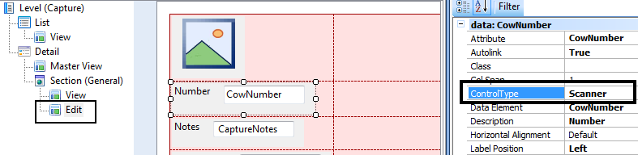

Scanner Control (GeneXus 17 Upgrade 5)
You have the possibility to use a scanner to enter information in a field from a barcode (refer to Notes section). At run-time a Scan button will be displayed beside your attribute when you tap on it, a barcode scanner will be executed so you can scan the product and the result of it will be then set as the value of your attribute.

Using the control
Just go to the relevant WorkWithDevices<Object>.Edit instance, select the attribute, and set Scanner for the Control Type property.

Take a look at MyCowBook sample to see it in action.
Notes
- The iOS simulator provides by XCode does not have any camera integrated to test Scanner control. If you want to access the camera you need a physical device.
- When using versions prior to GeneXus 15 Upgrade 12, Android devices must have installed an application that reads barcodes by using the de facto standard Zebra Crossing (a.k.a. ZXing). For example, the feature that reads barcodes could be integrated into the default camera of the device, but if it doesn't, a third-party application can be download from Play Store (e.g. Barcode Scanner app).
- It scans the most common of linear barcodes and matrix barcodes variants (e.g. QRCodes, EAN-13, etc).
Scope
See also
HowTo: Using ScanBarcode Method from Interop in SDApi for Smart Devices
Operation mode property
Display mode property
Videos
 Controls: SD Maps, Rating, SD Smart Grids, Switch
Controls: SD Maps, Rating, SD Smart Grids, Switch
Conceptual model of mobile applications
Architecture of Online applications
Container of sections in the Detail screen of the Work With